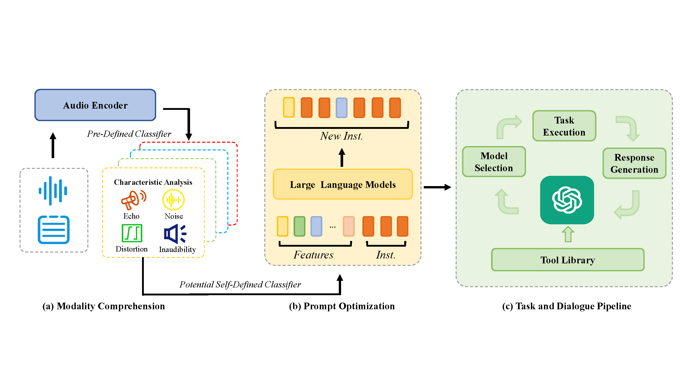

Anonymous Authors
Abstract. Large Language Models have recently achieved remarkable progress in serving as controllers to interpret user instructions and select suitable pretrained tools for a variety of audio tasks. However, current LLMs, when selecting tools, only consider the user’s textual input and the functional descriptions of the available tools, neglecting valuable information within the audio modality that could aid in choosing appropriate tools. Due to the possible ambiguity of instructions, errors in selection are common. To this end, we introduce AudioAgent, a versatile and adaptable agent framework for audio fields. It is the first system that emphasizes audio comprehension and utilizes these information to autonomously refine user-provided prompt in content and expression by one finetuned Large Language Model. Through clearer instructions, AudioAgent empowers the controller to precisely select the best tools and enhances the performance of tasks compared with traditional text-based agent. Our framework also enables users to freely register tools and utilize any LLM as the core controller. Both subjective and objective metrics validate the effectiveness of our work.

In this section, we provide some examples of our Prompt Optimization part. We list Raw, Raw', GT, GT', Ours. They are instructions without audio feature labels (Raw), Raw with specific grammatical errors (Raw'), instructions with audio feature labels (GT), GT with specific grammatical errors (GT’), and the result of our model based on Raw' and Modality Comprehension.
| Audio Sample | Raw | Raw' | GT | GT' | Ours |
|---|---|---|---|---|---|
In this section, we provide some examples to showcase the enhancement by AudioAgent's optimal selection of the suitable tool. Here is Speech Transcription. The Prompt is the raw input for these 2 Agent. Moreover, the tool in HuggingGPT only support English when receving the raw input, so it behaves poorly in other language.
| Audio Sample | Prompt | Optimized_Prompt | GT | HuggingGPT | Qwen-Audio | AudioAgent |
|---|---|---|---|---|---|---|
In this section, we provide some examples to showcase the enhancement by AudioAgent's optimal selection of the suitable tool. Here is Speech Transcription. Moreover, the tool in HuggingGPT can't finish the task without language type, so we only provide examples on Qwen-Audio.
| Audio Sample | Content | Prompt | Optimized_Prompt | Possible Answer | Qwen-Audio | AudioAgent |
|---|---|---|---|---|---|---|
In this section, we provide some examples to showcase the enhancement by AudioAgent's optimal selection of the suitable tool. Here is Audio Enhancement. Qwen-Audio lacks the ability to finish such task.
| Audio Sample | Prompt | Optimized_Prompt | HuggingGPT | AudioAgent |
|---|---|---|---|---|